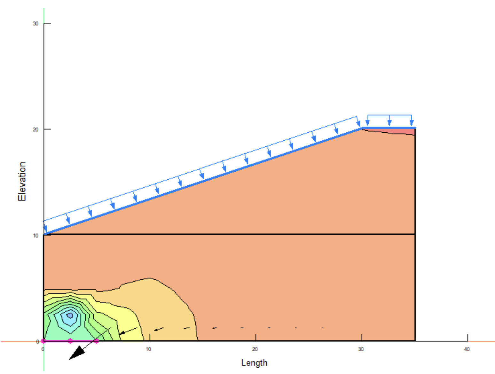
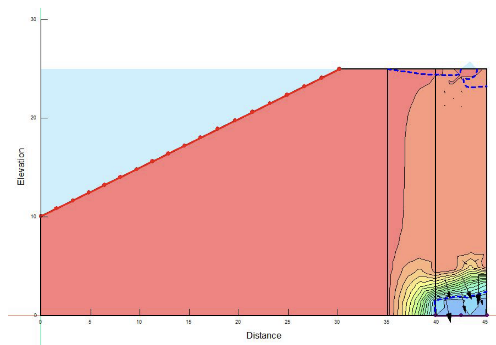
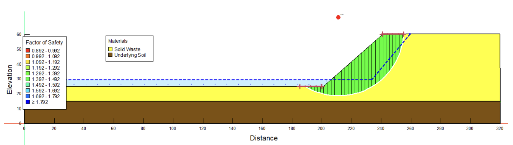
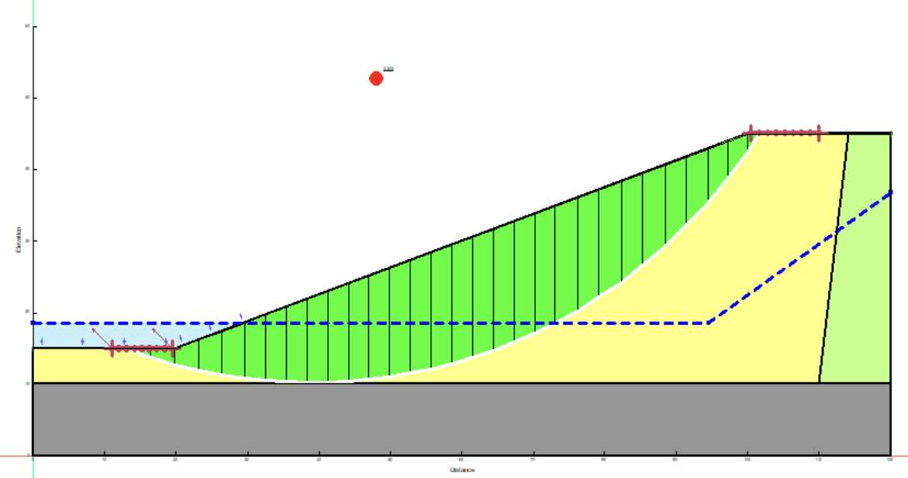

In my SEEP/W project, I embarked on an analysis of a dam, utilizing the SEEP/W software. This task involved a deep dive into the evaluation of pore water pressure distributions, a critical factor in understanding the dam's stability and safety. Through this project, I developed solutions aimed at enhancing the dam's structural integrity, demonstrating my capability to apply theoretical knowledge to practical, real-world problems.
The SLOPE/W project presented a different challenge, where I applied the SLOPE/W component of GeoStudio to analyze the stability of slopes under two scenarios: a slope comprising solid waste and a traditional earth dam with a clay core. My approach was methodical, involving detailed modeling of the slopes and careful assessment of their stability. This project was not just about calculating the factors of safety; it was an exploration into the nuances of slope stability, underlining the importance of accurate modeling in predicting and mitigating risks associated with slope failures.
These projects underscore my proficiency in geotechnical engineering, particularly in the domains of soil mechanics and slope stability. They highlight my ability to utilize advanced software tools for complex analyses, showcasing a blend of technical expertise and a practical approach to engineering challenges.
   